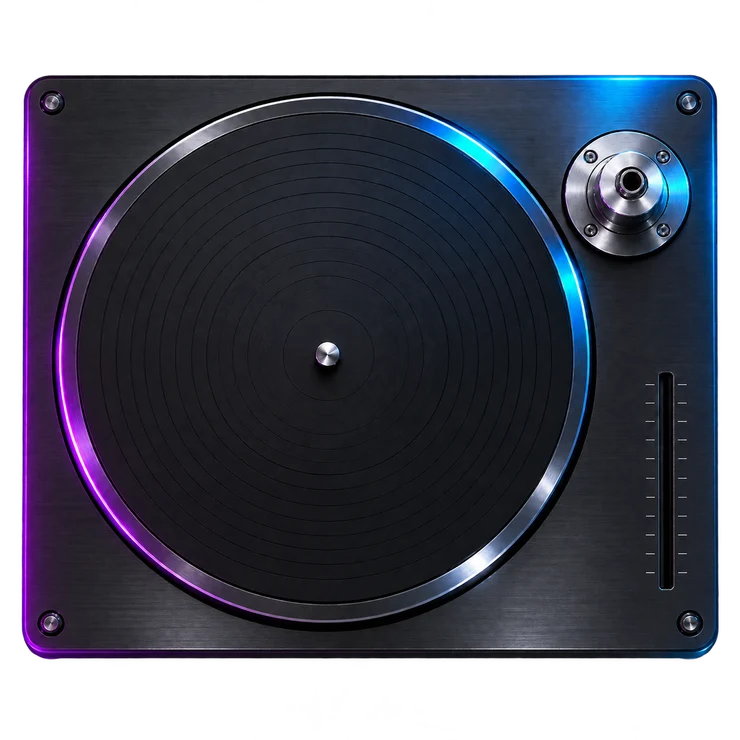

Groove Makers loading component
The loader dismisses when this page is ready.
Open the replayable design demo
Integrate this component with your existing homepage using INTEGRATION.md.
The loader dismisses when this page is ready.
Open the replayable design demo
Integrate this component with your existing homepage using INTEGRATION.md.
NAME BRAND RECORDS PRESENTS
